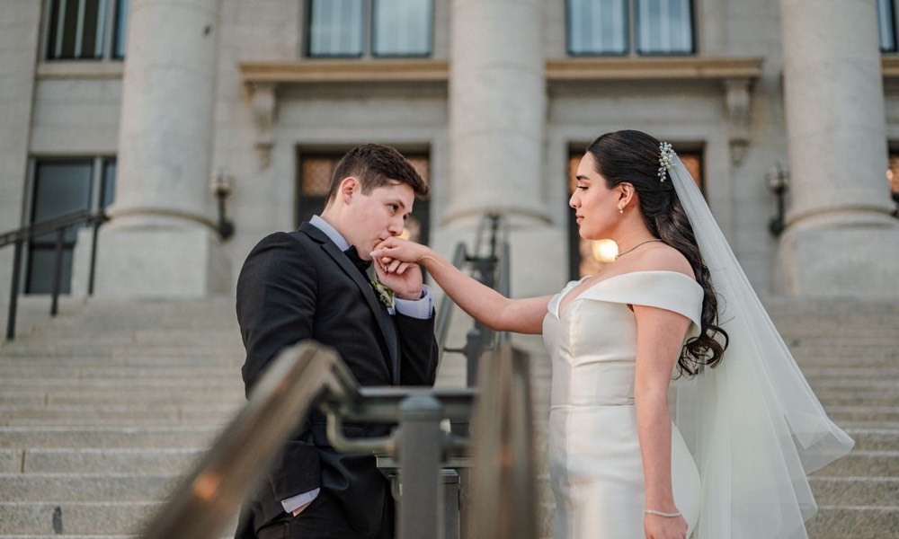
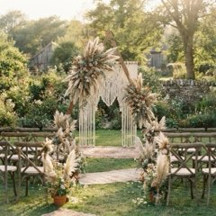
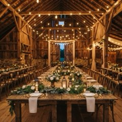
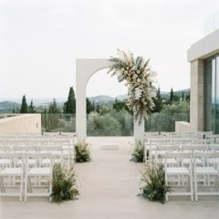
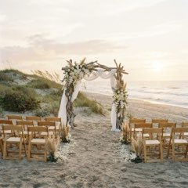

Dallas · Dallas County Clerk
Courthouse wedding in Dallas
Last checked: . Courthouse pages are re-checked every 3 months.
As of Oct 28, 2026, a courthouse wedding in Dallas costs $161 in official fees: $81 for the marriage license (Dallas County Clerk) and $80 for the civil ceremony (Justice of the Peace court 2-2 by appointment, cash only; other Dallas County courts charge $60 to $150).
A full courthouse day with a dress, flowers, photos and a dinner room: about $1,261 all in
Every figure below is the official page's own wording, with its link and the day we read it.
Want the dress, flowers and dinner for less too? Find my dress & flowers
Which look is yours? Tap one Example pictures, AI-made

Boho garden
Rustic barnClassic elegant
Modern minimal
BeachVintageRachel then shows real finds like this one: Maggie Sottero · Strapless lace gown, size US 10, $400 (seller's original $1,800).
Free · 90 seconds · no card
The fees and the steps, from the official pages
Copied word for word from Dallas County Clerk. Each row links to the page it came from.
| What | The official page says | Source |
|---|---|---|
| Marriage license fee | $81Official wordingThe cost of a marriage license is $81.00. | Dallas County Clerk read Oct 28 |
| Civil ceremony at a Dallas County courthouse (JP 2-2, Mesquite, weekday by appointment) | $80CASH ONLY - By appointmentOfficial wordingMonday thru Friday from 10:30a-3:30p: $80 CASH ONLY - By appointment | Dallas County Justice of the Peace court read Oct 28 |
| Other courthouse ceremony fee: JP 3-1 (North Dallas Government Center, LBJ Freeway) | $150weekday appointment, up to 15 guests; $150 walk-in, up to 5 guestsOfficial wordingAppointments - Monday-Friday 9:00am – 3:30pm -- $150 fee (Maximum 15 guests) | Dallas County Justice of the Peace court read Oct 28 |
| Other courthouse ceremony fee: JP 5-1 (page still lists the old East Dallas address) | $60weekday 10:30a to 3:30p, cash only, appointment requiredOfficial wordingMonday thru Friday from 10:30a-3:30p: $60 CASH ONLY | Dallas County Justice of the Peace court read Oct 28 |
| Waiting period | 72 hours after the license is issued (a district judge can waive it)Official wordingAfter you have purchased your marriage license, state law requires 72-hours before the ceremony takes place to get married, unless you obtain a waiver from a district judge. | Dallas County Clerk read Oct 28 |
| How long the license is valid | 90 days from the day it is issuedOfficial wordingA marriage license expires 90 days after the date the license is issued. | Dallas County Clerk read Oct 28 |
| ID you bring | Both of you: valid government-issued photo ID (driver's license, passport, military ID or ID card) and your Social Security numberOfficial wordingBoth persons must be present and provide: Valid government-issued photo ID. Acceptable forms of ID include: Driver's license, passport, military ID, or an identification card issued by Texas or another state, the United States or a foreign government | Dallas County Justice of the Peace court read Oct 28 |
| How to get the license / book the ceremony | Fill in the application online first (you get an order number), then both of you go to the County Clerk's office at 500 Elm St., Suite 2100 with that numberOfficial wordingMarriage license applications must be completed on-line. | Dallas County Clerk read Oct 28 |
| How you can pay the license fee | No personal checks: cash, money order, cashier's check, business check or credit/debit cardOfficial wordingNo personal checks are accepted. | Dallas County Clerk read Oct 28 |
| Twogether in Texas course: cheaper license and no wait | Takes $60 off the license fee and waives the 72-hour waitOfficial wordingTwogether in Texas reduces your marriage license fee by $60 and waives the 72-hour waiting period. | Dallas County Clerk read Oct 28 |
| County Clerk office address, phone and hours | 500 Elm Street, Suite 2100, Dallas, TX 75202; (214) 653-7099; 8:00 a.m. to 4:30 p.m., Monday to FridayOfficial wordingRecords Building - 500 Elm Street, Suite 2100, Dallas, TX 75202 Phone: (214) 653-7099 | Fax: (214) 653-7176 Hours: 8:00 a.m. - 4:30 p.m., Monday - Friday | Dallas County Clerk read Oct 28 |
| Certified copy of your marriage license | $10.00per search and/or certified copyOfficial wordingMarriage License (Search and/or Certified Copy) $10.00 | Dallas County Clerk read Oct 28 |
Not shown, because no official page states it:
- One county-wide ceremony fee (each Justice of the Peace court prints its own)
- Whether an appointment is required at the Clerk's office (the official pages disagree)
- A residency rule (only one court's page states one)
The steps in order
- Fill in the Dallas County marriage license application online and write down the order number it gives you.
- Both of you go to the County Clerk's Records Building (500 Elm St., Suite 2100) with photo ID and your Social Security numbers, and pay the $81 license fee (no personal checks).
- Wait 72 hours after the license is issued before the ceremony, unless a district judge waives it or you hold a Twogether in Texas certificate.
- Book a ceremony with a Dallas County Justice of the Peace court; each court sets its own fee (JP 5-1 $60, JP 2-2 $80 by appointment, JP 3-1 $150 on its pages).
- Hold the ceremony within 90 days of the day the license was issued, or the license expires.
The fees are the small part of the day. Rachel finds the rest for less. Find my dress & flowers
Make it feel like a wedding, for less
The license is the legal part. Here is one real find in each category couples still buy for a courthouse day, each from its own page and dated.
A sample courthouse day, all in
| Marriage license fee | $81 |
|---|---|
| Civil ceremony at a Dallas County courthouse (JP 2-2, Mesquite, weekday by appointment) | $80 |
| The dress | $250BHLDN · Casey dress |
| The photos | $400Shelly Voss Photography: courthouse ceremony coverage, 1-hour minimum ($400 an hour) |
| A venue for 10+ (hire only) | $450Blush Event Garden: Classic elopement |
| All in | $1,261 |
An example, not part of the $161 answer above: the official fees plus one real find per category from the cards. It is a sum of dated listings, not a quote; prices change.
Your free Dream Board
You just saw what the courthouse costs. Rachel finds your dress, flowers and dinner spot for less, every week.
Your free Dream Board: tap the photos you love, Rachel finds them for less every week.
- Tapthe photos you love
- Rachel searchesPoshmark, Etsy and venues
- Finds every Tuesdayin your board
What it takes: about 90 seconds, a few taps, your usual size, and your first name and email at the end. No card. What you get: your board with the first finds shown; more finds unlock with a paid plan.
Six in ten couples say matching their budget to online inspiration is their biggest planning stress (Zola, 2026; read Oct 28).
Questions people ask
How to get married at the courthouse in Dallas?
Fill in the Dallas County marriage license application online and keep the order number. Both of you go to the County Clerk's Records Building (500 Elm St., Suite 2100) with photo ID and pay the $81 license fee (no personal checks), wait 72 hours, then book a ceremony with a Justice of the Peace court.
How much is it to get married at the courthouse in Dallas?
As of Oct 28, 2026, the license costs $81 and each Justice of the Peace court sets its own ceremony fee: $60 at JP 5-1, $80 by appointment at JP 2-2 and $150 at JP 3-1. That makes $141 to $231 in fees, depending on the court.
Can you get married the same day in Dallas?
Not by default: Texas law requires 72 hours after the license is issued. A district judge can waive the wait, and the Dallas County Clerk's page says a Twogether in Texas certificate waives it and takes $60 off the license fee.
Can I get married at a courthouse in Texas?
Yes: in Dallas County, ceremonies are performed by Justice of the Peace courts, each with its own hours and fee. For example JP 2-2 marries couples Monday to Friday from 10:30a to 3:30p for $80 cash only by appointment.
Is it cheaper to get married at a courthouse?
The official fees here run $141 to $231. The lowest Dallas venue price we verified for a group of 10 or more is $450 (Blush Event Garden: Classic elopement), so the courthouse is the cheaper start; compare both pages before you decide.
Every price on this page links to the page it came from and shows the day we read it. No affiliate links: we earn nothing from these sellers or venues. How we check.